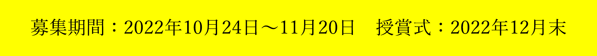
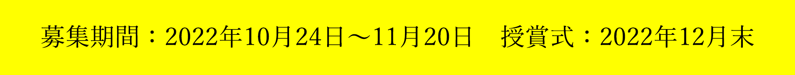
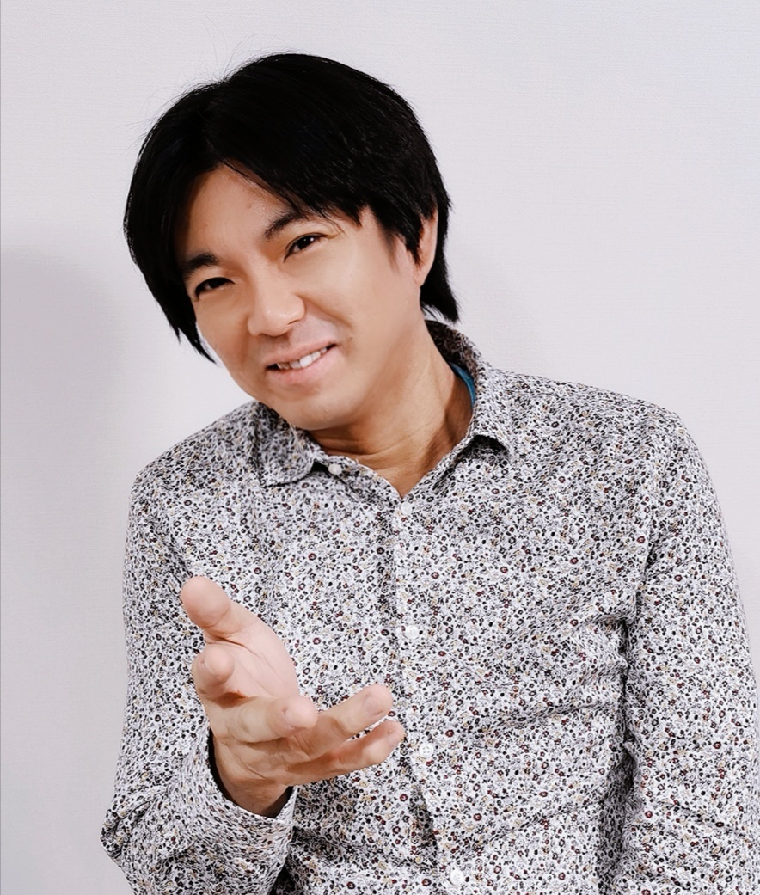
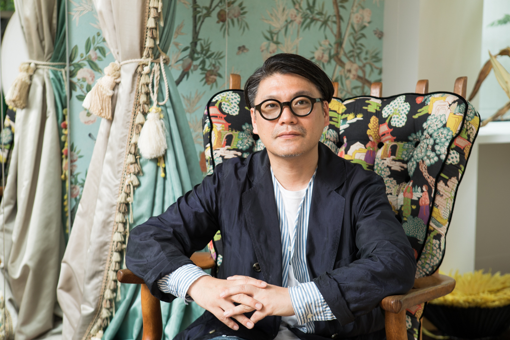

仮想世界の「あなた」がランウェイを歩く
VR時代のファッションショーが今年も開幕！
あなたの3Dアバターの最高の瞬間を授賞式で目撃しよう
授賞生放送
開催日：2022年12月22日 20:00-22:00
ニコニコ生放送
【アバターアワード2022】審査員：吉崎観音・橋本裕之・軍地彩弓・三木一馬
2022年アバターアワードのYouTube生放送はこちら：
XR kaigi 2022で入賞作品のランウェイウォークがお披露目！
2022年12月22日（木）・23日（金）の2日間にわたって開催される
国内最大級のXR/メタバースカンファレンス「XR kaigi 2022」の
VRMコンソーシアムブースで、
ソニーの空間再現ディスプレイ（Spatial Reality Display）『ELF-SR1』を使って
入賞作品のランウェイ動画を展示します。
来場者は、メガネやヘッドセットなどを使わずに、裸眼でアバターを全方位から鑑賞することができます。
応募資格
(1)アバターアワード部門：アバターのベストショット、全身がわかる画像を添付して、Twitter上でハッシュタグ「#AvatarAward2022」をつけて投稿してください。※当該投稿は公開状態にしてください。
(2)アバターライフ部門：アバター同士の交流やアバターならではの活動が伝わる画像を添付して、Twitter上でハッシュタグ「#AvatarAward2022」に加えて「#AvatarLife」を付けて投稿してください。※当該投稿は公開状態にしてください。
- その他以下の条件をお読みいただいた上、ご応募ください。
- 応募TwitterアカウントにてDMが「すべてのアカウントからのメッセージリクエストを許可する」に設定されており、VRMコンソーシアム公式アカウント @vrm_pr とダイレクトメッセージが送受信できるようになっている。もしくはメールアドレスをプロフィールなどに明記し、事務局から連絡が取れるようになっている。
- 投稿に使用するアバターの権利を保有している、もしくはそれに準ずる状態である。
- アバターメイキングツールに関しては何をご使用いただいてもかまいません。
応募締め切り
【済】2022年11月20日 23:59（JST）
アバターアワードとは？
仮想空間でのアバターといえば、海外では現実世界の自分を模倣するのが一般的ですが、日本では現実の肉体的な制約にとらわれず、さまざまなデザインのアバターが生み出されています。また、バーチャルYouTuberのように、自己の分身の枠を超えた全く新しいキャラクターも登場し、仮想世界ならではの表現力を活かした動画配信や音楽活動などを行う文化も生まれてきました。
そこで、3Dアバターの人格や権利を保護し、仮想世界を自由に移動するための共通規格「VRM」を策定および推進する一般社団法人VRMコンソーシアムでは、これら独創的なアバター文化の振興とクリエイターの社会的認知の向上を目的として、一般より広く3Dアバターの作品を募集し、優れた作品を表彰します。
投稿いただいたアバター作品は、今回の評価基準である「キャラクター性・ファッション性・先進性」において各方面で活躍されるクリエイターの皆様を審査員にお迎えして選考を行い、優秀作品は2022年12月22日の「アバターアワード2022授賞式」生放送のバーチャルランウェイにて紹介、表彰いたします。
審査員
「アバターアワード2022」審査員プロフィール
審査員は、アニメ『ようこそ実力至上主義の教室へ』や『ご注文はうさぎですか？』の監督を務めた橋本裕之、『ケロロ軍曹』の作者、『けものフレンズ』のコンセプトデザイナーとして広く知られている吉崎観音氏、人気ファッション誌の『ViVi』など数々の雑誌を手がけてきたファッション・クリエイティブ・ディレクターの軍地彩弓氏、作中に登場するゲームのサービス開始日である2022年11月6日を迎えた電撃文庫『ソードアート・オンライン（SAO）』などのミリオンセラーを生み出した編集者として知られる三木一馬氏など、多様な分野の第一線で活躍するクリエイターが参画します。審査においては、アバター作品のキャラクター性・ファッション性・先進性を評価し、選考を行います。また、表彰式ではニッポン放送のアナウンサー・吉田尚記氏がMCを務めます。
橋本裕之 様
アニメーション監督・演出。ガンダムや魔女の宅急便を見て1994年アニメーターとして業界に入る。その後演出に転向、『ご注文はうさぎですか？』で初監督を務める。女の子が主体のかわいい系作品を任される事が多い。主な監督作品『ご注文はうさぎですか？』『スロウスタート』『魔法少女育成計画』『エスタブライフ グレイトエスケープ』『ようこそ実力至上主義の教室へ』など。
吉崎観音 様
九州出身。1989年小学館新人コミック大賞佳作でデビュー。漫画・イラスト・キャラクターデザインなど多岐にわたって活躍。1998年に読み切り「ケロロぐんそー」を発表。1999年2月より「月刊少年エース」にて「ケロロ軍曹」本編を連載開始。2005年には「ケロロ軍曹」が第50回小学館漫画賞児童向け部門を受賞。代表作「けものフレンズ」「宇宙十兵衛」「アーケードゲーマーふぶき」「ドラゴンクエストモンスターズ+」他多数。
軍地彩弓 様
編集者/ファッション・クリエイティブ・ディレクター。講談社『ViVi』編集部でフリーライターとして活動。その後、『GLAMOROUS』の立ち上げに尽力する。2008年に現コンデナスト・ジャパンに入社。クリエイティブ・ディレクターとして、『VOGUE GIRL』の創刊と運営に携わる。2014年に株式会社gumi-gumiを設立。『Numero TOKYO』のエディトリアルアドバイザー、ドラマ『ファーストクラス』（フジテレビ系）や映画のファッション監修、Netflixドラマ『Followers』のファッションスーパーバイザー、企業のコンサルティングなど幅広く活動。
三木一馬 様
ライトノベル編集者。元・電撃文庫編集長。現在は株式会社ストレートエッジ代表取締役。主な担当作品に『ソードアート・オンライン』、『魔法科高校の劣等生』、『とある魔術の禁書目録』など。自らの著書に『面白ければなんでもあり 発行累計6000万部――とある編集の仕事目録』がある。近著では自らラノベ『チートの王』を執筆、ウェブで公開している（https://ncode.syosetu.com/n3229ga/）。
「アバターアワード2022表彰式」MC
吉田尚記 様
1975年、東京都生まれ。慶應義塾大学文学部卒業。ニッポン放送アナウンサー。ラジオ番組でのパーソナリティのほか、テレビ番組やイベントでの司会進行など幅広く活躍。また漫画、アニメ、アイドル、デジタル関係に精通し、「マンガ大賞」発起人となるなど、アナウンサーの枠にとらわれず活動を続けている。2012年に第49回ギャラクシー賞DJパーソナリティ賞受賞。著書に『なぜ、この人と話をすると楽になるのか』(太田出版)、『元コミュ障アナウンサーが考案した 会話がしんどい人のための話し方・聞き方の教科書』（アスコム）など。 （Twitterアカウント @yoshidahisanori ）

連絡について
12月上旬までに受賞連絡をいたします。選考の上、受賞者の発表はVRMコンソーシアムから受賞者の方へのみ、Twitterのダイレクトメッセージもしくはメールにてご連絡させていただきます。
※受賞で獲得された権利は、他の人に譲渡することはできません。
※受賞者にのみ提供される情報を他者に共有した場合、当選が無効となります。
※受賞者と長らく連絡が取れない場合には、受賞を無効とさせていただく場合もございます。あらかじめご了承ください。
最終選考時まで進まれた方へのお願い
最終審査にノミネートされたアバター作品はランウェイによるウォーキング動画の収録、およびVR会場によるアバターモデルの展示を予定しております。その際、以下の条件を満たす必要がございますので、ご対応が難しい場合、応募写真のみでのご紹介とさせていただきますのであらかじめご了承ください。
- VRM形式でファイル提出が可能である事
- FBX形式でファイル提出が可能である事
- 日本語での意思疎通が可能である方
- 18歳未満の場合、保護者の同意を頂ける方
応募規約
当イベントについては、下記を全てお読みいただき、ご同意いただいた方のみご応募ください。
受賞者には生放送で放映するために必要なデータ、情報をご提供いただきます。あらかじめご了承ください。
コメントと投稿写真、画像は、アバターアワード2022公式webサイト・Twitter含む各種SNS等でご紹介させて頂く場合がございます。
当イベントの運営一切は事務局が行います。事務局は、必要と判断した場合には、本応募要項を変更できるほか、当イベントの適正な運用を確保する為に必要なあらゆる対応ができるものとします。
応募者は当イベントへの応募にあたり、本応募要項および事務局の運営方法に従うものとし、その運営方法について一切異議を申し立てないものとします。
ご提供いただいたデータや情報の当選者の都合による変更、取り下げは受け付けません。
次の場合はいずれのご応募も無効となります。ご注意ください。
応募内容に公序良俗に反する内容を含む場合。
受賞連絡後、ダイレクトメッセージやメールに記載の期限内に返信がない場合。
ご提供データ群や情報、内容に不備がある場合。
その他、応募に際し、不正な行為があった場合。
投稿写真について
写真、画像、動画の投稿は、自己の責任の下で行うものとし、事務局ならびに一般社団法人VRMコンソーシアムは一切責任を負わないものとします。
また、投稿物が以下のいずれかにあたる場合には、選考の対象外とさせていただきます。理由等に関するお問い合わせにも応じかねますことをご理解ください。
著作権等第三者の権利を侵害するもの、名誉・信用を毀損するもの、迷惑行為となるもの、その他法令違反となるもの、及びそのおそれがあると事務局が判断したもの。
広告・宣伝・営業活動・特定の思想・宗教への勧誘、又はそれらに類する内容を含むもの。
住所等個人情報が含まれるもの。
上記の他、当イベントの趣旨にそぐわない等の理由で事務局が対象外と判断したもの。
※投稿写真については、著作権などの権利のすべてが応募者に帰属するもの、 および被写体の肖像権など、他者の諸権利を含む作品のうち、権利者の承認を得たものに限らせていただきます。
※万一、投稿写真について、第三者と紛争等が生じた場合は、応募者ご自身の責任と費用負担によって解決するものとし、事務局および他の応募者に対し一切の迷惑をかけないものとします。
個人情報の利用目的
応募者にご送付いただいた個人情報は、次の利用目的の範囲内で利用いたします。
受賞者への連絡のための利用。
サービス向上の目的で、個人を特定しない統計的情報としての利用。
個人情報を応募者のご同意なく上記の利用目的以外で使用する事や、第三者へ提供することはございません。
（※法令などにより開示を求められた場合を除く）
免責事項
当サイトの利用に関連して発生した利用者または第三者の損害について、事務局ならびに当法人は一切の責任を負わないものとします。また、利用者が当イベント規約に違反していると事務局が判断した場合、アカウントのブロック等、事務局が必要と判断する措置を取ることができるものとし、これにより利用者が被った損害について、事務局は一切の責任を負わないものとします。
準拠法および裁判管轄
当イベント規約に関しては、日本法を準拠法とし、当イベント規約に関する紛争については、東京地方裁判所を専属的合意管轄とします。
以上
ＶＲＭコンソーシアムについて
3Dアバター向けファイルフォーマット「VRM」の策定・普及を目的とした一般社団法人です。詳細につきましては以下のサイトをご覧ください。
ＶＲＭとは？
VR時代の3Dキャラクター・アバター使用を想定したプラットフォーム非依存のファイル形式です。
従来の3Dモデルとしてのテクスチャやボーンといった情報に加え、視線設定など一人称で操作するアバターに必要な情報を扱えるようにし、環境により異なるスケールや座標系などを統一することで、3Dアバターが配信・ゲームなどあらゆるプラットフォームで使用されることを想定しています。
また、人が操作して人格を演じるアバターの特性を考慮して、このアバターを他人が使用しても良いか、暴力表現をしても良いか、などアバター特有の権利までもファイルに埋め込むことが可能です。
将来的には3Dモデルの権利保護の機能を兼ね備え、アイテムやアバターの着せ替え販売を実現するなど3Dモデルが流通する際の標準フォーマットを目指していきます。
ＶＲＭの技術仕様につきましては以下のドキュメントをご覧ください。
アバターアワードアーカイブ
アバターアワードは2020年に創設されました。
これまでの受賞作品やコメントについてはこちらからぜひご覧ください！